⚽ Futebol
🏀 Basquete
🏐 Vôlei
🎾 Tênis
🥋 Artes Marciais
QUADDRA
Plataforma digital para conectar pessoas a espaços esportivos
⚡
Do interesse à prática em poucos cliques.
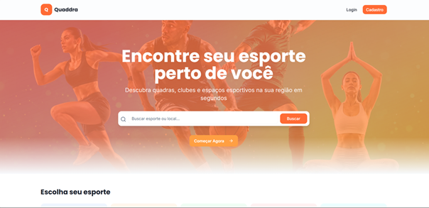
🏟️
Imagem de Capa
assets/capa-quaddra.png
Caio
Gabrielle
Julia Cancio
Lucas Diogo
Victor Hugo
Vinicius Penedo
PROJETO INTEGRADOR I · ADS · FATEC IPIRANGA · 2026 · Orient.: Prof. Esp. Samuel Henrique da Rocha
Victor — Problema
O esporte está perto.
A informação, não.
"Muitas pessoas querem praticar esportes, mas não sabem onde encontrar espaços disponíveis em sua região."
🗂️
Dados dispersos
Informações espalhadas em múltiplas fontes
📢
Divulgação falha
Gestores sem canal eficiente
🔍
Sem filtros esportivos
Ferramentas genéricas não servem
🗺️
Barreiras geográficas
Usuário não conhece locais próximos
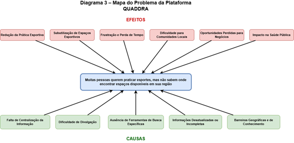
🗺️
Mapa do Problema
assets/mapa-problema.png
Mapa do Problema
Victor — Análise do Problema
Três ferramentas,
uma causa raiz.
Análise 01
5W2H
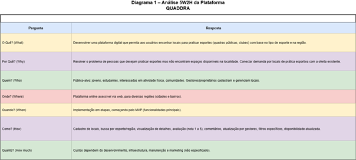
📋
Diagrama 5W2H
assets/diagrama-5w2h.png
What · Why · Who · When · Where · How · How Much
Análise 02
Ishikawa
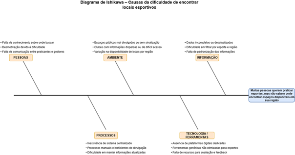
🐟
Diagrama de Ishikawa
assets/diagrama-ishikawa.png
Causa e Efeito — Diagrama Espinha de Peixe
Análise 03
Mapa do Problema
🗺️
Mapa do Problema
assets/mapa-problema.png
Causas → Problema Central → Efeitos
Gabrielle — Solução Proposta
Uma plataforma que centraliza
busca, avaliação e divulgação de espaços.
Locais públicos e privados em um só lugar.
Como funciona
1
Usuário escolhe esporte e região
2
Sistema filtra e exibe locais disponíveis
3
Usuário vê detalhes, avalia e comenta
G
Gestor autentica e atualiza o espaço
- Busca por esporte, bairro ou cidade
- Filtros de infraestrutura e horário
- Avaliações de 1 a 5 estrelas
- Disponibilidade em tempo real
quaddra.com.br — plataforma esportiva
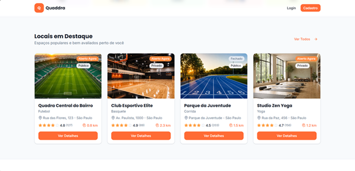
💻
Mockup da Solução
assets/mockup-solucao.png
Caio — Público-alvo
Para quem pratica
e para quem oferece.
🏃 Quem busca praticar
- Jovens e estudantes
- Pessoas interessadas em atividade física
- Comunidades locais e de bairro
- Iniciantes sem referência de onde começar
⚽ Futebol
🏀 Basquete
🏐 Vôlei
🥋 Artes Marciais
🏟️ Quem oferece espaços
- Gestores de quadras e campos públicos
- Proprietários de locais privados
- Clubes e academias
- Centros esportivos municipais
📍 Visibilidade
📊 Gestão
⭐ Avaliações
Usuários
↔
QUADDRA
↔
Gestores

👥
assets/publico-alvo.png
Vinicius — Requisitos
O que o sistema precisa entregar.
⚙️ Funcionais
RF01–RF09
RF01–RF09
- Cadastro de locais públicos e privados
- Busca por tipo de esporte
- Busca por região e bairro
- Exibição de detalhes e infraestrutura
- Avaliações (1–5) e comentários
- Atualização por gestores
- Filtros por característica
- Disponibilidade em tempo real
🎯 Não Funcionais
RNF01–RNF05
RNF01–RNF05
- Disponibilidade: acesso via web
- Usabilidade: interface intuitiva
- Desempenho: atualização rápida
- Arquitetura: centraliza fontes
- Eficiência: supera ferramentas genéricas
📋 Regras de Negócio
RN01–RN05
RN01–RN05
- Somente gestores editam locais privados
- Locais públicos são sinalizados
- Avaliações exigem login
- Disponibilidade segue padrão
- Prioridade a dados recentes e completos
📄 Base documental
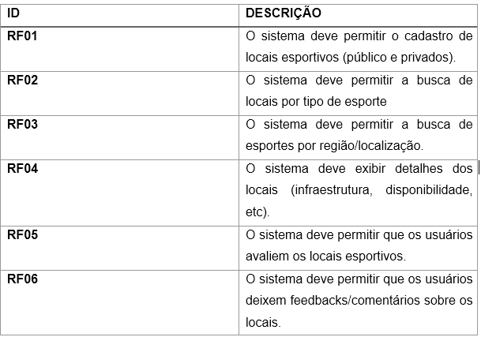
📊
Tabela de Requisitos
assets/tabela-requisitos.png
Tabela completa
Julia — Algoritmos e Fluxo
6 algoritmos que definem
como o sistema funciona.
Fluxo do usuário
👤 Acessa
→
🏅 Esporte/Região
→
🔍 Consulta
→
📋 Exibe
→
⭐ Avalia
Fluxo do gestor
🏢 Painel
→
🔐 Autentica
→
✏️ Edita
→
⚙️ Processa
→
✅ Publica
Alg. 1
Cadastro de Local
Nome, endereço, esporte, tipo, horário
Alg. 2–3
Busca Esporte/Região
Filtro WHERE no banco de dados
Alg. 5–6
Avaliação e Feedback
Valida login · nota 1–5 · média
🧠 Base lógica do sistema
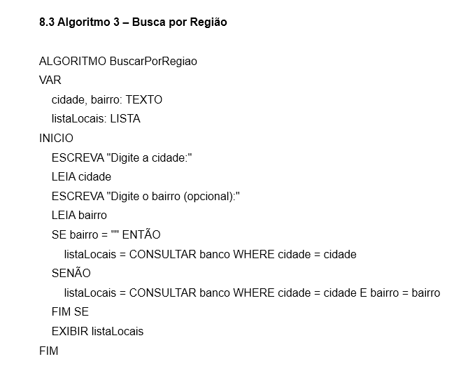
🧠
Algoritmo — Pseudocódigo
assets/algoritmo-fluxo.png
Pseudocódigo — 9 Algoritmos
Julia — Fluxogramas
Galeria de Fluxogramas
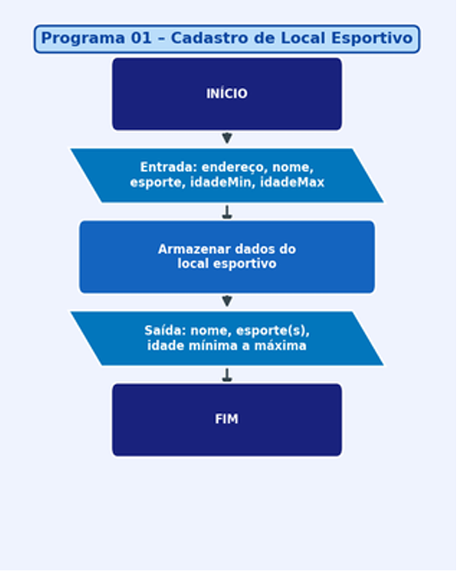
📝
Fluxograma — Cadastro
assets/cadastro.png
🔍 Ampliar
Cadastro de Local
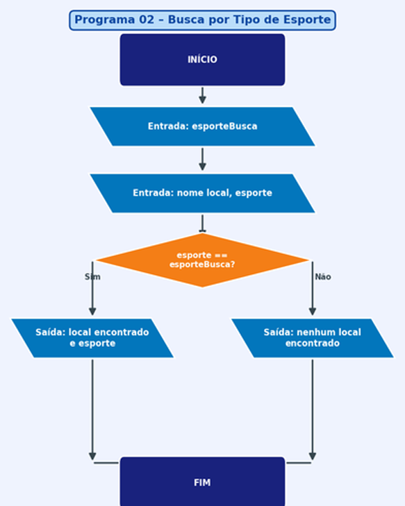
⚽
Busca por Esporte
assets/busca.png
🔍 Ampliar
Busca por Esporte
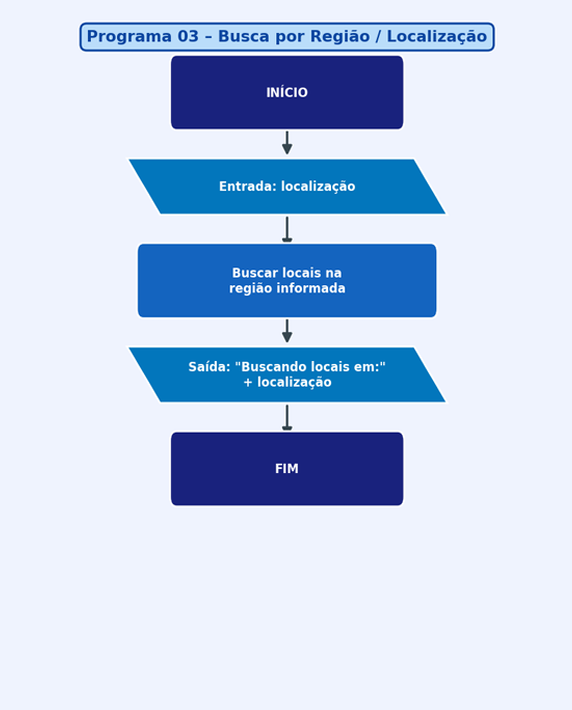
📍
Busca por Região
assets/busca-regiao.png
🔍 Ampliar
Busca por Região
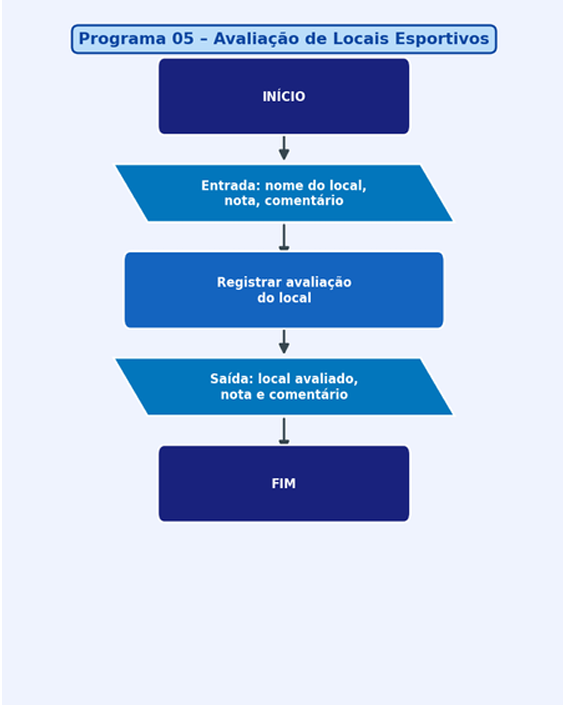
⭐
Avaliação de Local
assets/avalia.png
🔍 Ampliar
Avaliação de Local
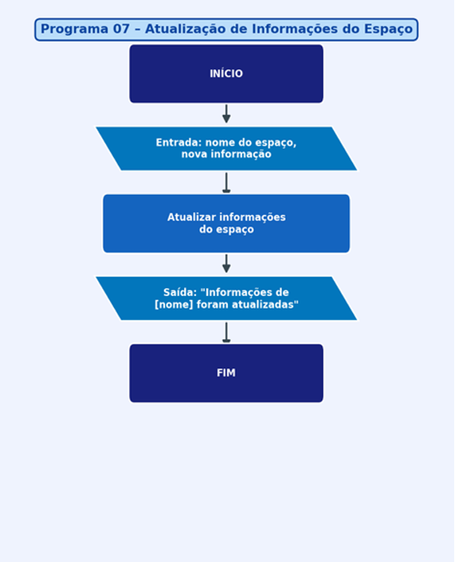
🔐
Atualização por Gestor
assets/insere-informacoes.png
🔍 Ampliar
Atualização por Gestor
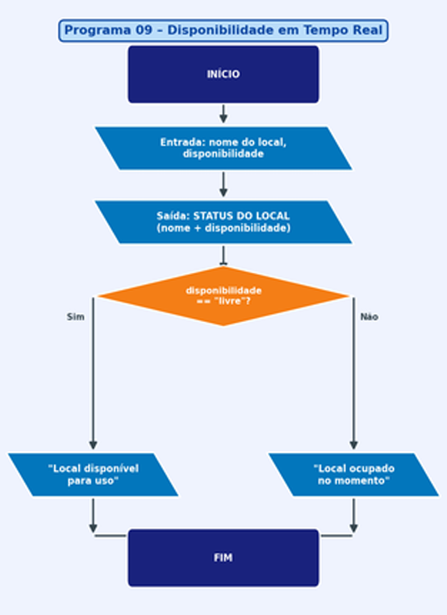
🟢
Disponibilidade
assets/exibe-disponibilidade.png
🔍 Ampliar
Disponibilidade Atualizada
Lucas — Protótipo
Interface da plataforma QUADDRA
quaddra.com.br — busca de espaços esportivos
📍 São Paulo, SP
🖥️
Tela Principal — Home
assets/prototipo-home.png
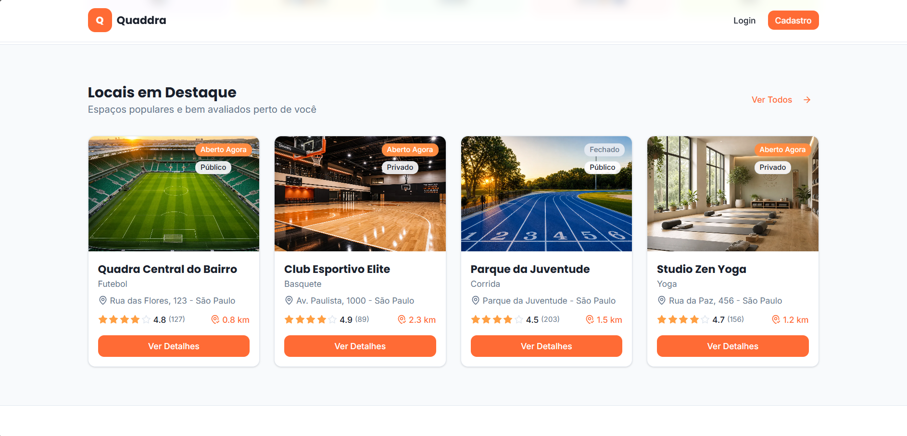
🔍
prototipo-busca.png
Avaliação
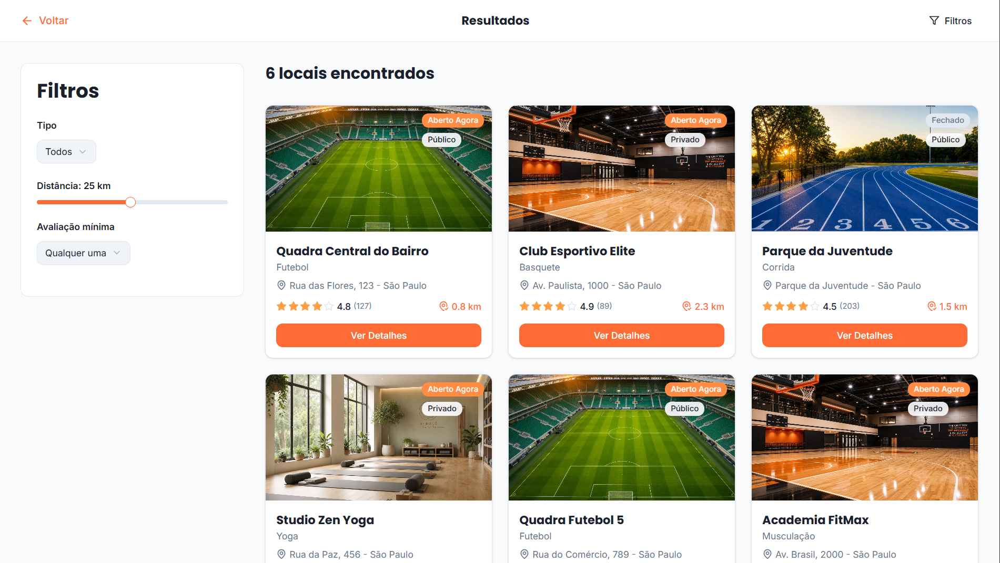
📋
prototipo-filtro.png
Filtros
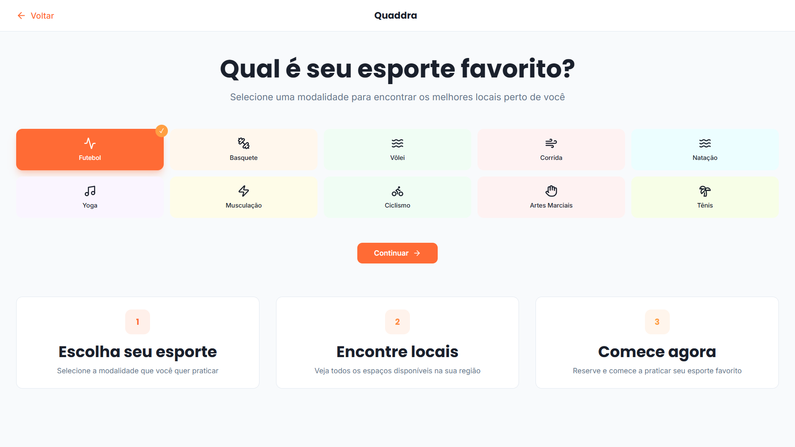
⭐
prototipo-avaliacao.png
Busca
🎨 Funcionalidades demonstradas
- Barra de busca por esporte ou local
- Filtros rápidos por esporte e disponibilidade
- Cards com nota, distância e status
- Mapa com pins coloridos por disponibilidade
- Badge diferenciando público de privado
🟢
Disponível hoje
🟠
Em breve
🔵
Vagas abertas
Valor do Projeto & Potencial
Mais que busca: um ecossistema
esportivo urbano.
- Resolve problema real de acesso à informação esportiva
- Incentiva a prática esportiva e estilo de vida ativo
- Reduz a ociosidade de espaços públicos e privados
- Dá visibilidade a locais pouco divulgados
- Impacto positivo na saúde pública e comunidade
🚀 Próximos Passos
- Mapa interativo integrado
- Chat entre usuários e gestores
- Eventos esportivos na plataforma
- Testes de usabilidade com público-alvo
Praticantes
👤 Usuários
↔
Plataforma
⚡ QUADDRA
↔
Proprietários
🏟️ Gestores
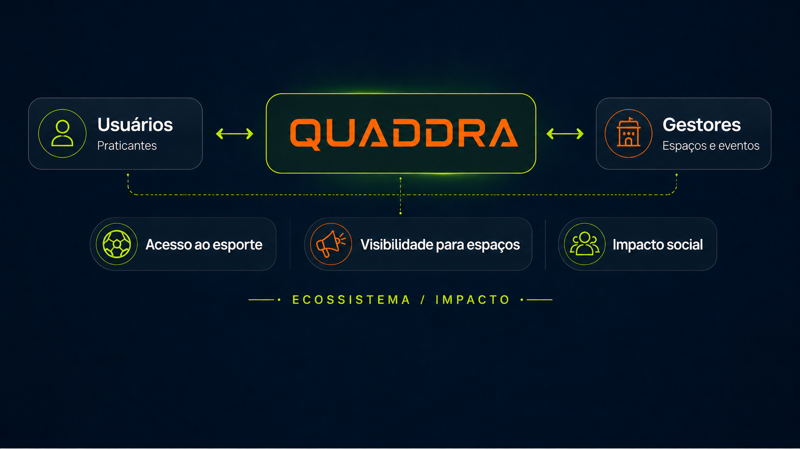
🌐
Ecossistema / Impacto
assets/ecossistema-quaddra.png (opcional)
💰 Potencial de evolução
📦 Planos premium para gestores
⭐ Destaque pago para locais premium
🤝 Parcerias com eventos esportivos
Caio — Conclusão
O QUADDRA transforma
informação dispersa em acesso real ao esporte.
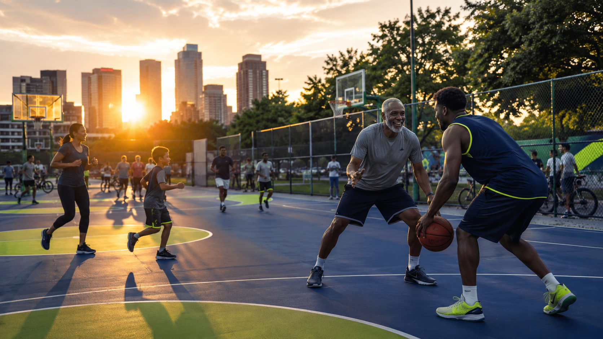
🏆
Imagem de Impacto Final
assets/conclusao-impacto.png (opcional)
- Centralização de informações esportivas
- Busca eficiente por esporte e região
- Participação ativa de usuários e gestores
- Base técnica: requisitos, algoritmos, fluxogramas
- Protótipo navegável desenvolvido
- Impacto positivo na saúde e comunidade
"Encontrar onde praticar esporte deve ser tão simples quanto escolher o esporte."
⚽
🏀
🏐
🥋
QUADDRA · PROJETO INTEGRADOR I · ADS · FATEC IPIRANGA · 2026 · OBRIGADO!